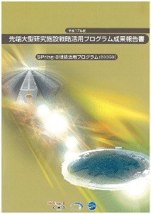
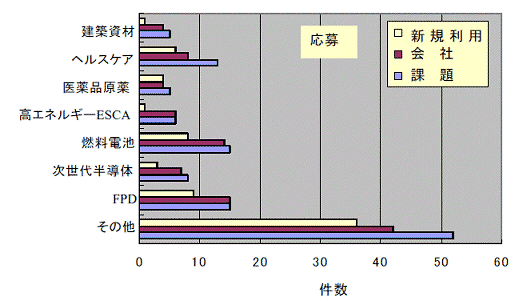
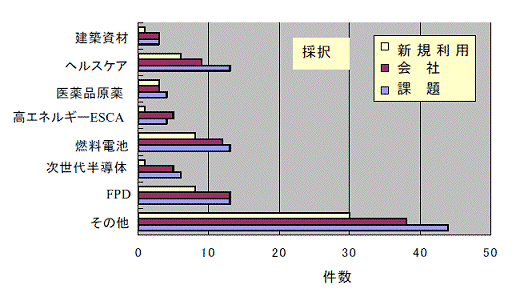
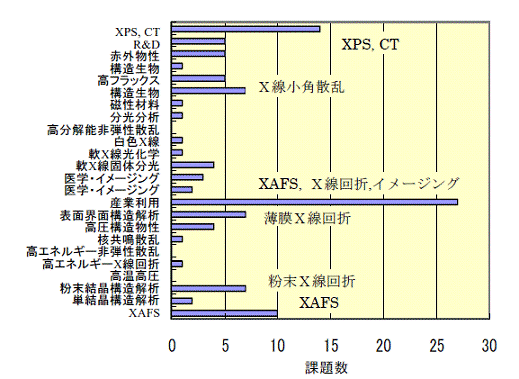
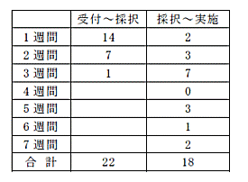
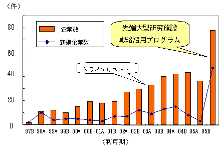

1. 概要2. 公募の内容
3. 成果公開の考え方
4. 実施の経緯
5. 結果
6. まとめ
7. 課題利用報告書
大型放射光施設SPring-8では、平成17年度より、（財）高輝度光科学研究センター（JASRI）において、
我が国が有する最先端の大型研究施設について、その汎用性にふさわしい広範な利用者・領域により、
施設の能力を最大限に引き出すような質の高い研究開発を実施し、新技術・新産業を創出していくために、
戦略的な活用を推進する事を目的とした先端大型研究施設戦略活用プログラムを実施している。
概要は、平成17年度は「SPring-8」と「地球シミュレータ」を活用するプログラムで、これらの施設については、
新規利用者・新領域の拡大が必要で、とりわけ産業界の利用者拡大を進めることが緊急の課題と考えられるため、
利用促進を図るものである。
- SPring-8戦略活用プログラム
世界最高性能の大型放射光施設「SPring-8」を利用して、 文部科学省が策定する戦略に沿った利用の拡大を図るプログラムである。 新たな利用者による利用を円滑化するために、研究を支援する研究技術員を配置するとともに、 研究計画に関してご相談を受け、助言を行うコーディネータを配置する。 - 地球シミュレータ戦略活用プログラム
世界最高性能の超高速並列計算機システム「地球シミュレータ」を利用して、 文部科学省が策定する戦略に沿った利用の拡大を図るプログラムである。 新たな利用者による利用を円滑化するために、 地球シミュレータの利用を技術的に支援するシミュレーション技術支援要員を配置する。 - SPring-8及び地球シミュレータ戦略活用プログラム
SPring-8と地球シミュレータの両方を利用することにより、 創造的な研究開発の推進や高度な研究成果を目指すプログラムである。
平成17年度は125課題程度の採択を予定した。
このうち、産業界による利用課題を9割程度、大学・公的研究機関による利用課題を１割程度、採択する予定である。
本プログラムで募集する課題は「新規利用者による研究」、「新領域研究」と 「重点領域研究」に大別され、
「新規利用者による研究」、「新領域研究」、「重点領域研究」の順に、より高い優先度を置いている。
「新規利用者による研究」とは、これまでSPring-8を利用したことのない利用者、所属企業による研究を指している
（但し、事業規模が相当程度大きく事業範囲が多岐に及ぶ企業で、
これらの企業関係利用者を一律に取り扱うことに支障がある場合は、既利用企業からの利用も認める）。
「新領域研究」とは、これまでSPring-8で実施されたことがない領域の研究、
又は近年開発された新手法を用いることによって可能になった新しい段階の研究を指している
（例：コンクリート耐久性評価、ヘルスケア製品の機能評価、化粧品の機能評価、医薬品材料における結晶多形の同定、
高エネルギーX線を用いた光電子分光（ESCA）など）。
「重点領域研究」とは、経済社会的ニーズが極めて高く、向こう10年間に我が国の国際競争力に大きな影響を与え得る分野で、
国として重点的に進めるべき研究であり、従来利用の研究課題とは領域やフェーズが異なり新規性をも有するものを指し、
具体的には燃料電池、次世代半導体、フラットパネルディスプレイ（以下「FPD」という。）の3領域を指している。
また、このプログラムの一環として、SPring-8の優れた分析装置としての性格を活用する即応性を必要とする課題について、
「緊急実施型利用」を実施している。
本プログラムにおいてSPring-8を利用して得られた成果は、所定の利用報告書にまとめて提出される。 この利用報告書は公開とするが、他の一般課題等とは異なり、 利用者は利用報告書とともに「利用報告書公開日延期申請書」を提出することにより、 施設運用機関との協議を通じて、特許出願、特許取得等に必要な準備期間（2年間程度）として 公開日を延期することが出来るのが特徴である。
- 重点領域の指定
「重点領域推進委員会」にて、先端大型研究施設戦略活用プログラムを政策的に推進すべき分野として、 「重点産業利用」が領域指定された。SPring-8戦略活用プログラム課題は、領域指定型の重点研究課題（公募）として扱われる。 - 課題選定
採択課題の選定は、学識経験者、産業界等の有識者から構成される「SPring-8戦略活用プログラム課題選定委員会」 （以下「選定委員会」という。）により実施される。選定委員会は、申請者から提出された申請書類等の内容について、 文部科学省が設置する外部有識者から構成される 「先端大型研究施設戦略活用プログラムに関する検討会」（以下「検討会」という。）において示された方針に基づき、 評価を行い、本プログラムの趣旨に照らして優秀と認められる採択課題を選定する。
審査は非公開で行われるが、申請課題との利害関係者は当該課題の審査から排除される。 また、検討会および選定委員会の委員は、委員として取得した一切の情報を、 委員の職にある期間だけでなくその職を退いた後も第三者に漏洩しないこと、 情報を善良な管理者の注意義務をもって管理すること等の秘密保持を遵守することが義務付けられている。 - 審査の手順
審査は以下の手順により実施される。
- 形式審査
提出された申請書類について、応募の要件を満たしているかについて審査する。 なお、応募の要件を満たしていないものは、以降の審査の対象から除外される場合がある。 - 書類審査
選定委員会の下に設置する専門分野別の分科会（外部有識者で構成）により、書類審査を実施する。 - 最終審査
書類審査における評価を踏まえ、選定委員会において審査を実施し採択課題を決定する。
- 形式審査
- 審査の観点
審査（形式審査を除く。）は以下の観点に重点を置いて実施される。- 科学技術における先端性を有すること
- 特許化、製品化等を通じて新技術、新産業創出に資すること
- 社会経済ニーズに合致すること
- 研究手段としてのSPring-8の必要性
- 実験内容の技術的な実施可能性
- 実験内容の安全性
- 利用者支援
コーディネータ、産業応用・利用支援グループが中心に、課題毎に担当者をおき、 BL担当者の協力のもと全所的に支援した。支援の内容は、重点分野の実験環境整備、 コーディネータ及びスタッフによる実験企画・準備、実験実施、実験解析に至る技術支援、 及び個々の実験に必要な経費などの財政支援からなる。 - 利用実験
利用実験期間の区切りは、通常の年度分けとは少し異なるため、 平成17年度の本プログラムの採択課題は2005Bの利用期及び2006Aの利用期の３月で実施される （2005B利用期が2005年9月～12月の期間、2006A利用期が2006年3月～7月の期間である）。 - 報告
2006年6月以降に、平成17年度の先端大型研究施設戦略活用プログラム成果報告会を開催する予定である。 その結果についてはSPring-8ホームページ等に掲載予定である。
- 応募及び実施結果
応募及び採択結果を表１に示す。
表1 機関、領域別応募採択結果産業 大学 公的機関 合計 新領域研究
新規利用者81/100 9/35 4/9 94/144 重点領域 19/21 4/17 0/1 23/39 合計 100/121 13/52 4/10 117/183 採択率 83％ 25％ 40％ 64％
（分野は申請者の申告で分類、表示は採択数/応募数）
全体で183課題の応募があり、当該施策の趣旨に沿った審査の結果、117課題を採択し、実施している。 産業界から121課題の応募（89社、4機関）があり、100課題が採択（75社、3機関）された。 内、SPring-8と地球シミュレータの併用課題が2課題含まれる。産業界の利用促進の趣旨から、 大学・公的機関には厳しい採択状況であった。
- 産業界の動向
産業界の応募及び採択課題の領域動向を次のグラフに示す。


産業界の新規利用者は、全体で、33社4機関から43課題の応募があり、25社3機関からなる35課題が採択され、 利用実験が実施されている。100課題に占める新規利用者の割合は35％と高い。さらに、すでに利用している企業においても、 17社1機関から25課題の新規事業分野の応募があり、24課題が採択され、実施されている。 従って、両者を含めると新規利用は60％の非常に高い割合を占めている。
産業界採択課題のビームライン別のグラフを次に示す。

産業界の利用は、広範にわたる放射光利用技術の中から、少数の特定の技術に集中している（応募状況も同様）。 それらは、XAFS、X線回折、X線小角散乱、XPS、イメージングであり、特にXAFSが多い傾向が顕著に現れている。
- 緊急実施型利用状況

現行の2回／年の利用のサイクルが長いため、産業界のニーズに合わないとの要望が産業界から強く出ていた。 そのため、今回、一部利用枠を残して、随時利用できる緊急実施型利用制度を設けて運用した。 受付は随時とし、当該施策に沿った基準に加えて、緊急性を重視し、（財）高輝度光科学研究センターが実施を判断した。
2005B利用期で実施した結果は、20社2機関から22課題の申し込みがあり、18課題が実施された。 実施課題の内訳は、新規利用者・新規事業が10課題、新領域が3課題、重点領域が4課題、その他1課題である。 また、緊急性の観点から、受付から採択までに要した期間は短期間であるが、 実施に際しては、全体の課題実施日程を決めておく必要から、実施まで2ヶ月強を要した課題もあった。 - 利用報告書の公開日延期
平成17年度に採択された課題で、2005B利用期で実施した課題（緊急実施型利用を除く）について、 利用報告書公開日延期申請が出された。内訳は次の通りである。
- 公開日延長許可：20件
理由内訳（複数回答有り）
知的財産権の取得のため：12件
事業への適用のため：6件
その他の理由：4件
- 公開日延長不許可：1件（2課題）
- 公開日延長許可：20件
- 特徴
はじめに施策の目的である新規利用者・新領域の動向を分析する。 表1に示されたように産業界・大学・公的機関とも、この領域に多くの応募があり、潜在ニーズの高さが伺える。 特に、産業界の動向を詳細に見ると、新領域では、4つの領域を例示したが、その他の領域での申請が多く、 広範な放射光利用の特徴が現れている。 例示した領域では、ヘルスケア領域で化粧品・日用品関連の企業が新たに参入してきている点が今回目立った特徴である。
一方、重点領域では、燃料電池とFPDで応募が多く、次世代半導体では少ない状況であった。 特に、新規利用者の参入の観点では、さらに顕著であった。応募企業をみると、燃料電池やFPD分野では、 製品組み立てメーカとは別に材料供給メーカが新規に参入していることが特徴である。 半導体分野では、材料も含めて大手のエレクトロニクスメーカが全て自社で研究開発を進め、 有力な材料メーカが無いとも推測される。
利用技術との観点では、工業・環境触媒、燃料電池電極や水素吸蔵合金などの課題で、XAFSに最も多くの課題が集中している。 また、最近開発された高エネルギーの光電子分光も予想通り多くの応募があり、これらの傾向は、今後とも続くものと予想している。
最後に、当該プログラムの産業利用全体における意義について述べる。 図は、民間の実験責任者が実施した課題に関して整理した半期ごとの企業数の推移である。 このグラフは、同一企業が複数課題を実施しても1社として数えている。 また、折れ線部分は、その利用期に初めて課題を実施した新規企業数を示している。 2002年及び2003年からの増加は、文部科学省により先行して実施されたトライアルユースの効果によるものである。 さらに、当該施策が実施されたことにより、2005年下期では、突出した企業数の伸びを示し、 新規企業の参入も著しい伸びとなる原因となっている。 従って、トライアルユースにより利用実績の無い企業にも関心が高まっていた潜在ニーズが、 当該プログラムで一気に顕在化したものと理解している。

図：実験責任者として課題を実施した企業数の推移
SPring-8の新規利用者・新領域の拡大、とりわけ産業界の利用者拡大を進めることを目的にした
先端大型研究施設戦略活用プログラムの実施の結果、民間の実施課題および実施企業数が倍増した。
この背景は、先行したトライアルユースなどの産業利用推進室のこれまでの活動が企業の感心を高める中、
産業利用にビームタイムを確保し、コーディネータと支援要員を増員して、新規の利用者に応える当該施策が、
時宜を得た有効な施策であったものと考えている。
最後に、文部科学省及びJASRI担当者など、施策の遂行にご尽力いただいた方に感謝する。
（ここに掲載される課題利用報告書は、2005B利用期に実施された課題（緊急実施型課題利用を含む）のうち、 利用報告書公開日延期申請許可となったものは除いている。また、緊急実施型利用を行ったものについては、 タイトル末尾に（※）を記述している。）